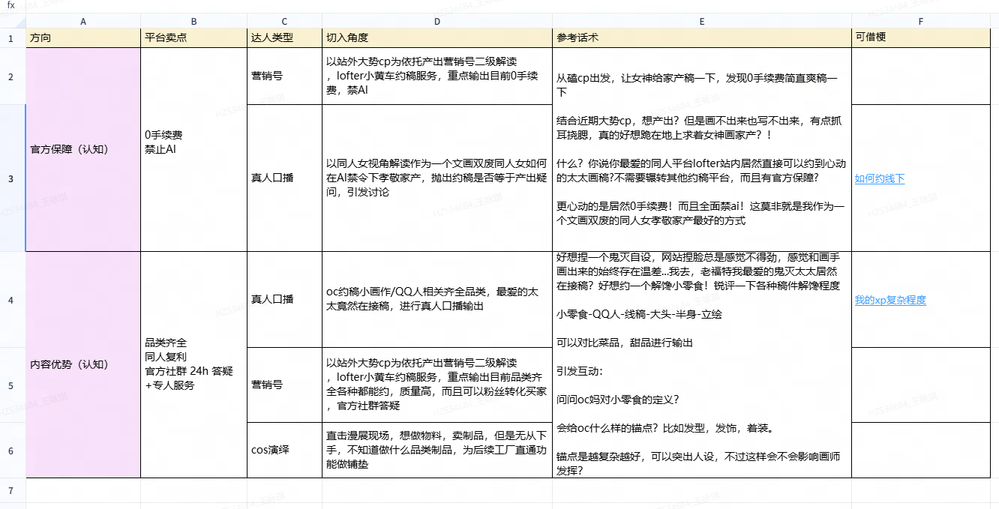
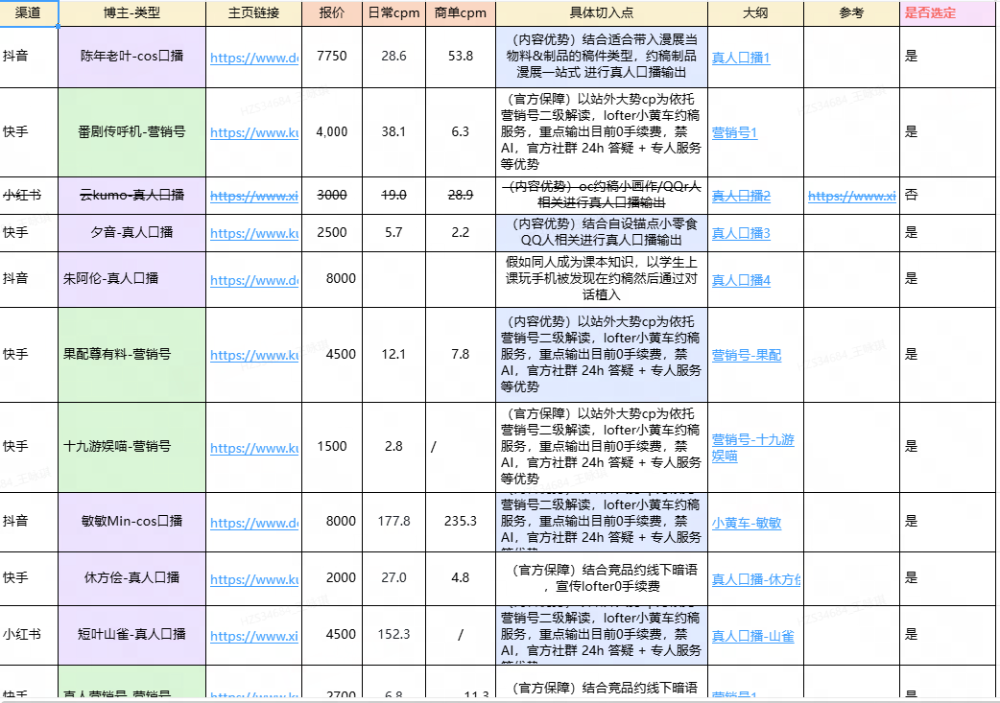
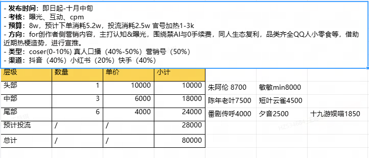
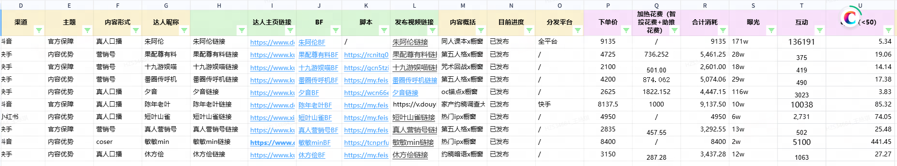
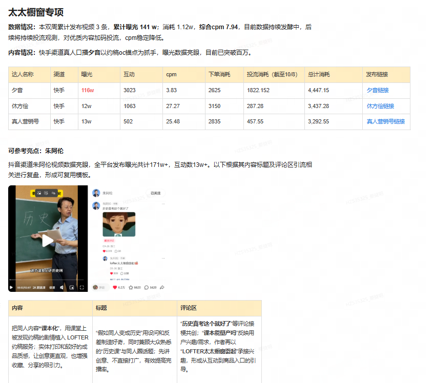
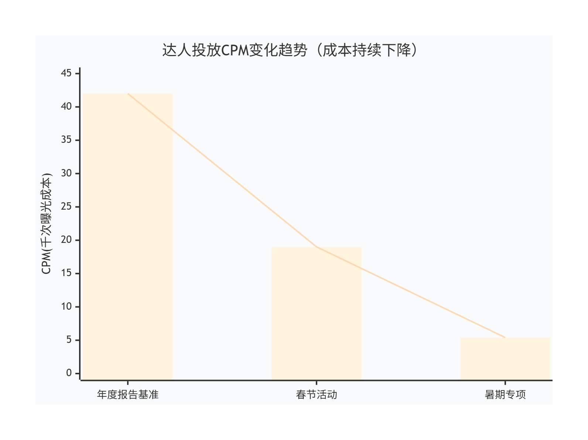
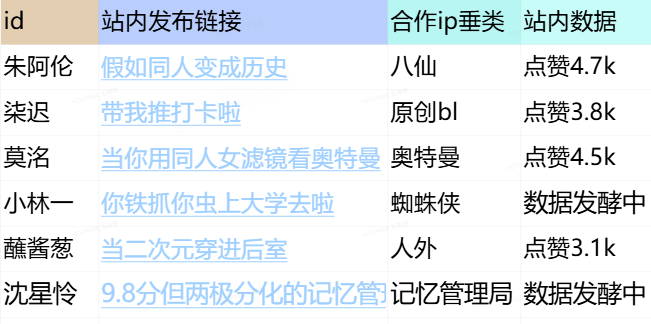

确定产品定位
冷启期先把“太太橱窗”定位成 LOFTER 约稿生态入口：用户能找到风格匹配的创作者，创作者能接到单。
WORK 03 / KOL
游戏直播讲机制，Coser 给角色感，营销号进行二级解读，泛娱乐负责破圈，同人创作者负责社区深度。 达人不是一份名单，而是一张按内容目标调用的传播网。
核心数据 / RESULTS
SPECIAL CASE / LOFTER 太太橱窗
不是“找几个大号发稿”，而是把约稿平台的产品定位、预算、达人结构和 brief 串成一条可执行的内容链路。先小预算验证，再把跑通的内容加量。
冷启期先把“太太橱窗”定位成 LOFTER 约稿生态入口：用户能找到风格匹配的创作者，创作者能接到单。
排期即日起–10 月中旬；总预算 8w：下单 5.2w、投流 2.5w、官号加热 1–3k；按 1:3:6 分头部 1 / 中部 3 / 尾部 6。
抖音 40% / 小红书 20% / 快手 40%；真人口播 40–50%、营销号 50%、Coser 0–10%。用 0 手续费、禁 AI、官方 24h 答疑做差异点。
按 IP、画风、粉丝画像筛人；优先有约稿经验、评论区活跃、能接梗的创作者；站内私信和站外建联并行。
brief 不写广告腔：给参考视频、必提信息、禁区、评论区引导；把“为什么点进太太橱窗”写进开头。
11 条内容按渠道排期；先看快手 3 条样本 141w，再按 CPM、互动、进店和约稿转化筛选；整体曝光 423w+、较预期 +40%。
从排期、达人筛选、预算拆分到执行结果，保留可查的过程。





FEATURED CONTENT / 01
朱阿伦 / 抖音 · 把同人圈的“历史课”梗做成短视频，用课堂场景承接“太太橱窗”的约稿服务；171w+ 曝光、13w+ 互动。
打开小红书原帖 →

时间轴讲策略，下面拆动作：建联、brief、脚本、成片、投流，全部围绕这次太太橱窗专项。
代理提报和自己建联并行，先看内容类型是否匹配，再看粉丝量和报价。

把卖点拆成达人能执行的东西：素材方向、内容要求、画面参考、必提信息和禁区。

达人返还脚本后逐条改，改到能拍、能过审、也还是达人自己的语气。

发布不是结束。评论要维护，高潜内容要挑出来加投，低的要及时止损。
这次最值得复用的不是某一条视频，而是“1:3:6 + 三种内容切口 + 小预算测试”的方法： 先定产品定位，再分预算，按内容目标调用达人；跑出高互动内容后加投，把评论区高赞沉淀成下一轮选题。
KOL RADAR / 达人雷达
讲机制、讲版本、讲体验，适合承接核心玩家和深度转化。
用角色感、视觉和情绪让用户先喜欢角色，再了解游戏。
做二级解读，把圈层梗翻译成大众话题，让非核心用户也能看懂。
负责破圈，用更泛的梗、吐槽和情绪把内容推到圈层外。
在社区里做深度内容，沉淀 UGC、口碑和长尾搜索。